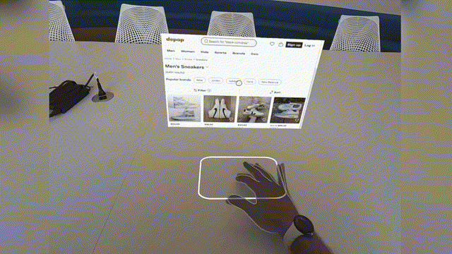
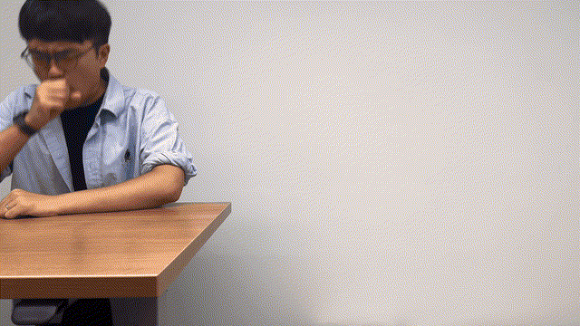
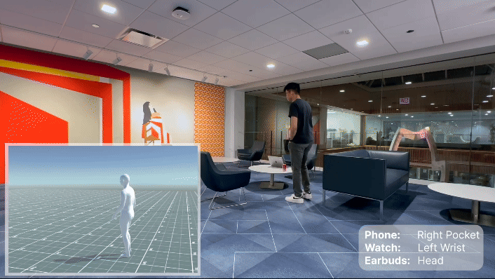

I am a PhD student at the University of Chicago advised by Prof. Hank Hoffmann and Prof. Karan Ahuja. Previously, I earned a B.Phil in Computer Science at the University of Pittsburgh where I was fortunate to work with Prof. Daniel Mossé, Prof. Sherif Khattab, and Prof. Amy Babay.
My research interests lie at the intersection of embedded systems, machine learning, and HCI. I'm interested in developing novel systems to better understand, communicate and interact with the world around us.
I grew up in Sintra, a beautiful town in Lisbon (Portugal).
Selected Publications

SurfaceXR: Fusing Smartwatch IMUs and Egocentric Hand Pose for Seamless Surface Interactions
Vasco Xu, Brian Chen, Eric J Gonzalez, Andrea Colaço, Henry Hoffmann, Mar Gonzalez-Franco, Karan Ahuja
IEEE VR '26 (TVCG Special Issue)

